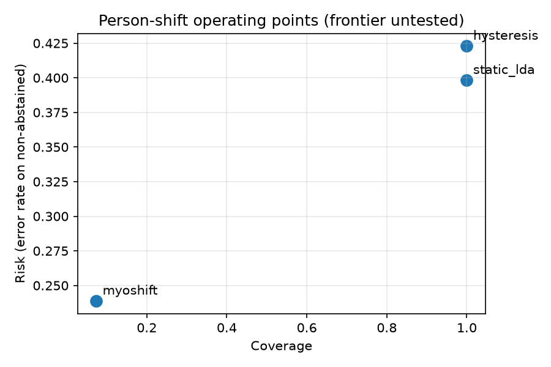

RoboteX Labs' public-data engineering demonstration: a reproducible sEMG data-to-report pipeline with verified inputs, leakage-aware splits, record resets, rest-exposure scoring and participant uncertainty. This corrected negative study does not establish client delivery, adoption or clinical benefit.

Person-shift selective window recall is lower than static LDA: 0.073 [0.031, 0.137] versus 0.512 [0.381, 0.751]. Trial-event recall is a separate, coarse detection metric, not physiological event timing. The available runs counted 92 false command events in total across the repeated method evaluations. Short laboratory rest exposure and a zero-count bootstrap interval cannot establish safety equivalence. Decoder novelty remains withdrawn. Threshold-swept risk-coverage and matched-recall comparisons are untested. Person coverage stop rule fired: False. Hysteresis interval-overlap novelty stop fired: True. This withdrawal stop is not an equivalence test. The few-shot baseline is unavailable under the frozen rest-only calibration prefix. No general benchmark novelty or clinical usefulness is established by this repair.
Run the demonstration
pip install -e ".[dev]" bash scripts/download_pilot.sh python scripts/run_benchmark.py myoshift verify-scorers
Headless regeneration writes JSON, prediction traces, figures and reports. Python 3.11/macOS arm64 is locally exercised; Python 3.12 is CI-configured and awaits a hosted receipt.
Compact verification receipt; full tables and limitations; negative-result report; technical report and provenance.